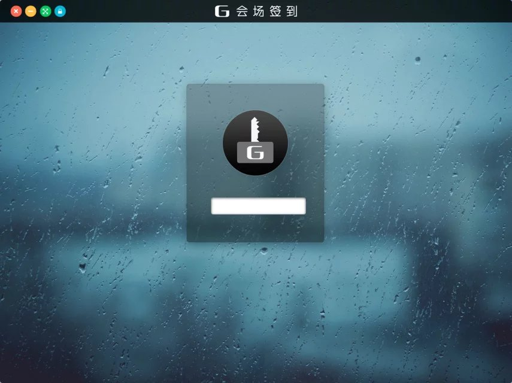
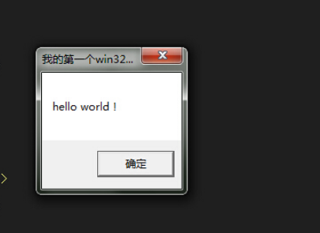
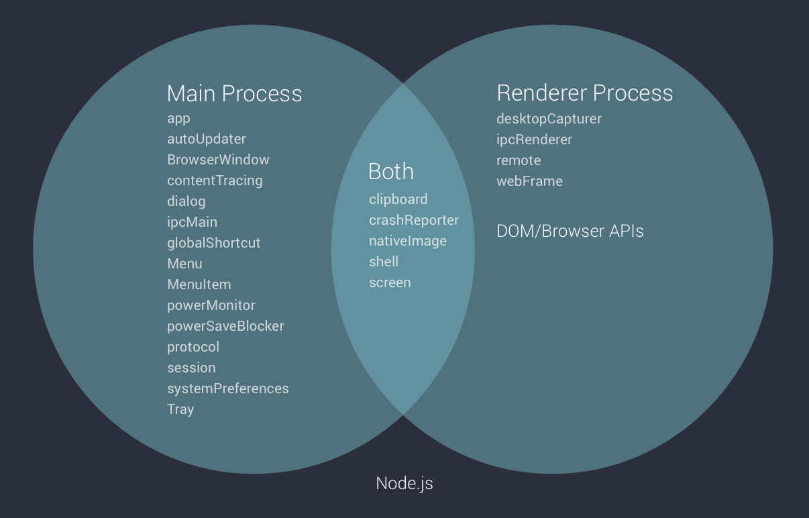

Desktop APP Development With FrontEnd Tech
1 Introduce Electron/Node-Webkit
1.1 What is that?
Electron/Node-Webkit is a tool lets for building cross-platform desktop apps with javascript/html/css
1.2 ScreenShot-login
1.3 ScreenShot-home
1.4 Difference between Javascript/Nodejs
- Javascript(run in browser with sandbox)
- Nodejs(run in server side without sandbox)
1.5 The power of desktop APP?
- read systems file
- offline support(no loading indicator, service-worker can do same thing)
- access device(audio/video)
- cross site scripting
- frame-less/without browser UI
- …
1.6 Desktop APP development before node-webkit
1.6.1 win32 assembly

1.6.2 win32 api
1.6.3 history
- 基于系统 api(win32 api, 汇编、C++)
- 抽象系统 api 之后形成的框架/库(Win: MFC/Delphi/WPF, Linux: Gnome/GTK+/KDE, Mac: Cocoa)
- 跨平台 UI 库(Qt)
- 前端写界面，JS 调系统 API (Windows Runtime, Metro)
- Flash 方案(Adobe Air)
- HTML5写界面，Nodejs 适配系统 API
1.7 Node-Wekbit http://nwjs.io
- 2011 start project with name node-webkit
- 2015 rename to nw.js
- current v0.27.1, node: 9.2.1 Chromium: 63
1.8 Electron https://electron.atom.io/
- 2013 start project with atom-shell
- 2014 open source with MIT LICENSE
- 2015 rename to Electron
- 2016 announce 1.0
- current v1.7.9 node: 7.9.0 Chromium: 58, V8: 5.8.283.38
2 Basic concept of Electron
2.1 process
3 Features of Electron & Demo time
3.1 build-in feature & demo
3.2 electron community
- index https://electronjs.org/community
- ui library http://photonkit.com/
4 Q&A
4.1 What's the pros and cons for electron
4.1.1 pros
- modern way to develop user interface/interaction(react/redux)
- thousands of packages from npm.js, also has some UI library
- cross placeform
- latest browser feature without compatibility issues
- easy for debugging/crash reporting/auto update/windows installer
- easy to learn and eary to find developers
4.1.2 cons
- app size >= 50MB?
- feature limitation(i.e. touchbar)
- performance
4.2 Differnece between Electron and Node-Webkit
https://electronjs.org/docs/development/atom-shell-vs-node-webkit
4.3 Difference between Electron and Chrome extension
- Chrome extension is for build web app
- Electron is for build app, more powerful
4.4 How to start a server and use database in Electron
- why you need an server? server is not belongs to an App
- want store some data? just use localStorage/sessionStorage/indexDB like in browser
4.5 Is my app source code protected for decompilation
No, the V8 JavaScript engine is never designed to hide source code.
4.6 Use native npm modules
- native npm modules?(node-sass)
- different v8 version between your system nodejs and electron
4.7 Talk with third part app/cli?(git, imagemagick)
- install the third part app by npm postinstall
- download the portable version and put it in your apps folder
- https://github.com/jlord/git-it-electron/blob/master/lib/spawn-git.js#L11
4.8 Access to OS process?
npm native module https://www.npmjs.com/package/ps-tree
4.9 Atom/Visual Studio Code both are using electorn, why VSC is fater than atom?
http://teahour.fm/2017/12/12/why-vscode-is-better-than-atom.html
- different aim (atom: hackable editor, VSC: 开箱即用)
- optimiztion (atom: react -> real dom -> vistual dom, VSC: real dom -> typescript)
- algorithm